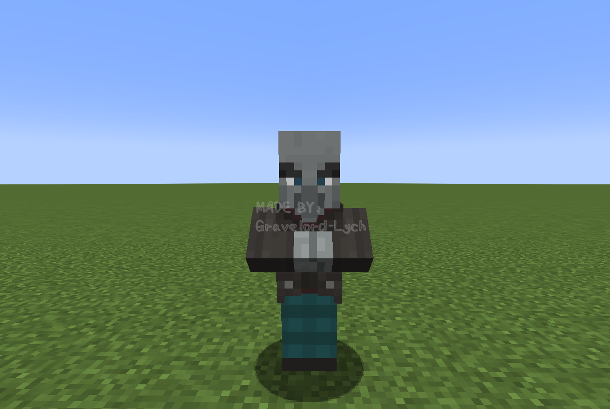
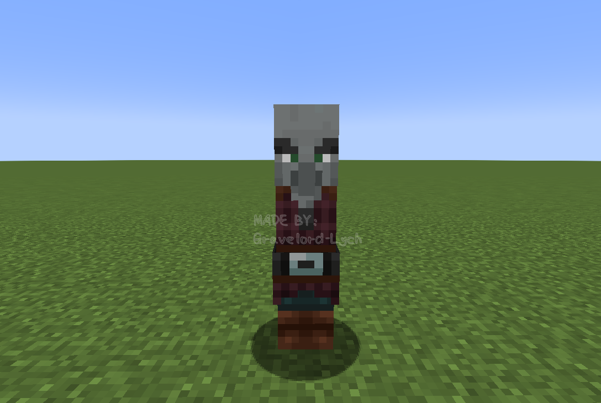
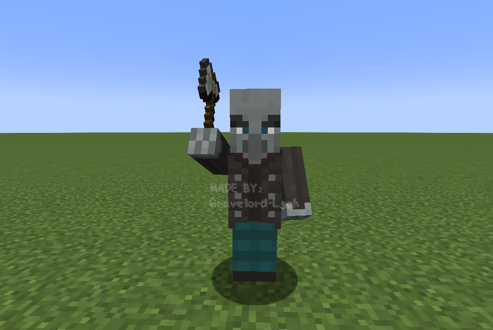
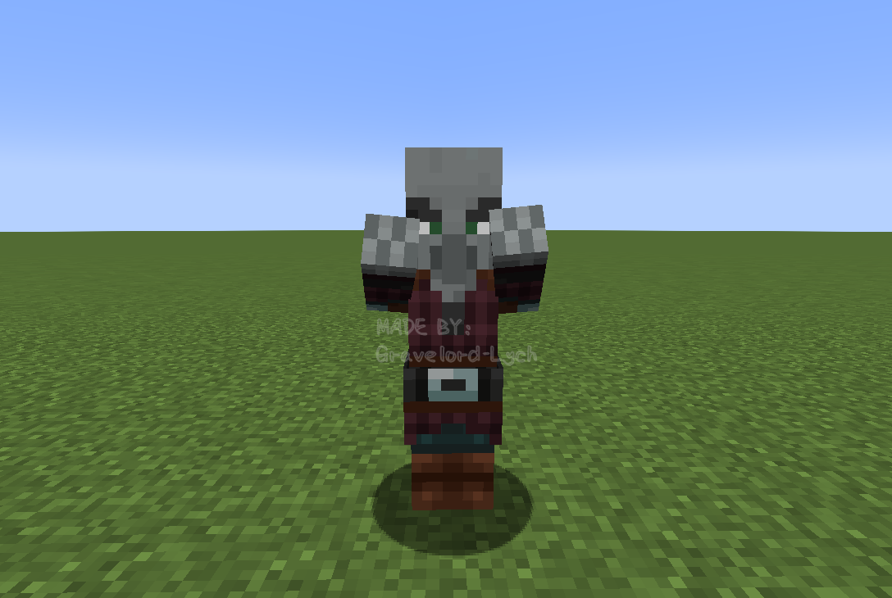
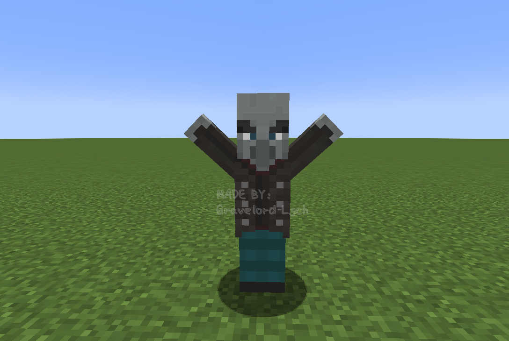
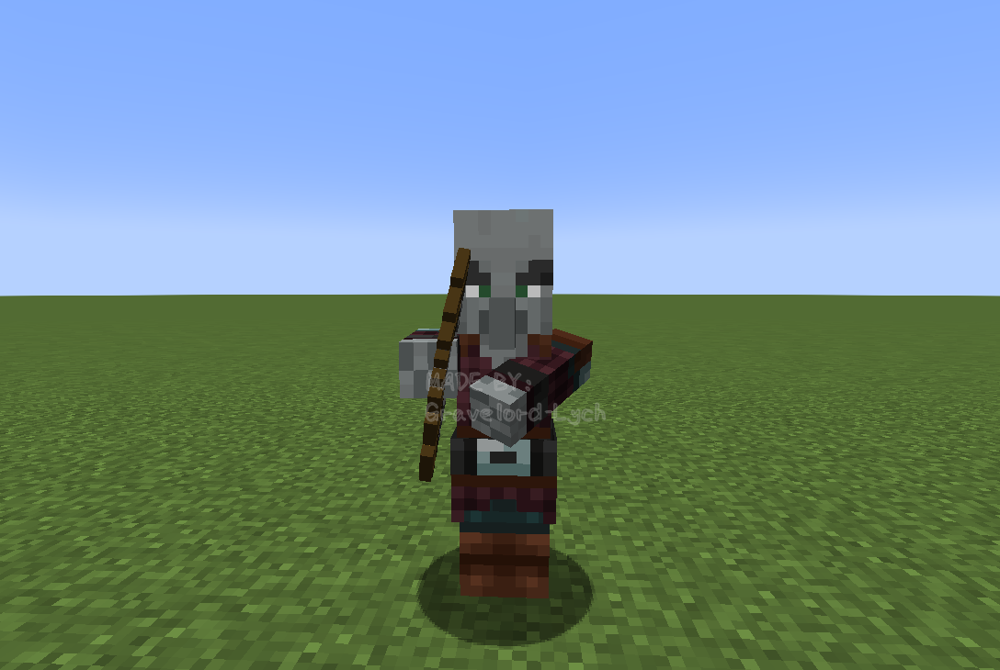
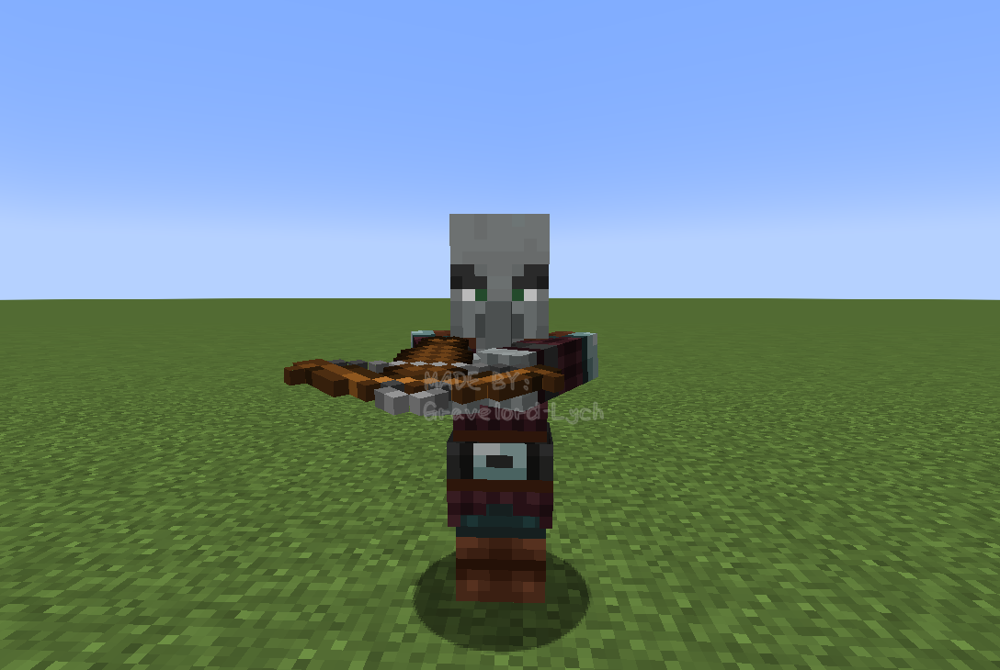
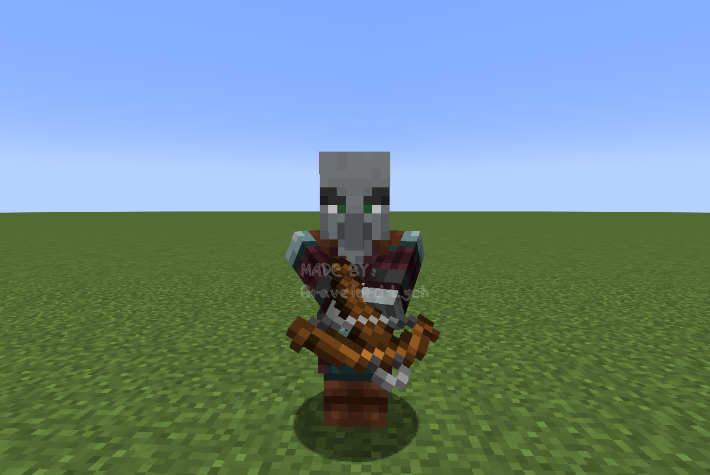
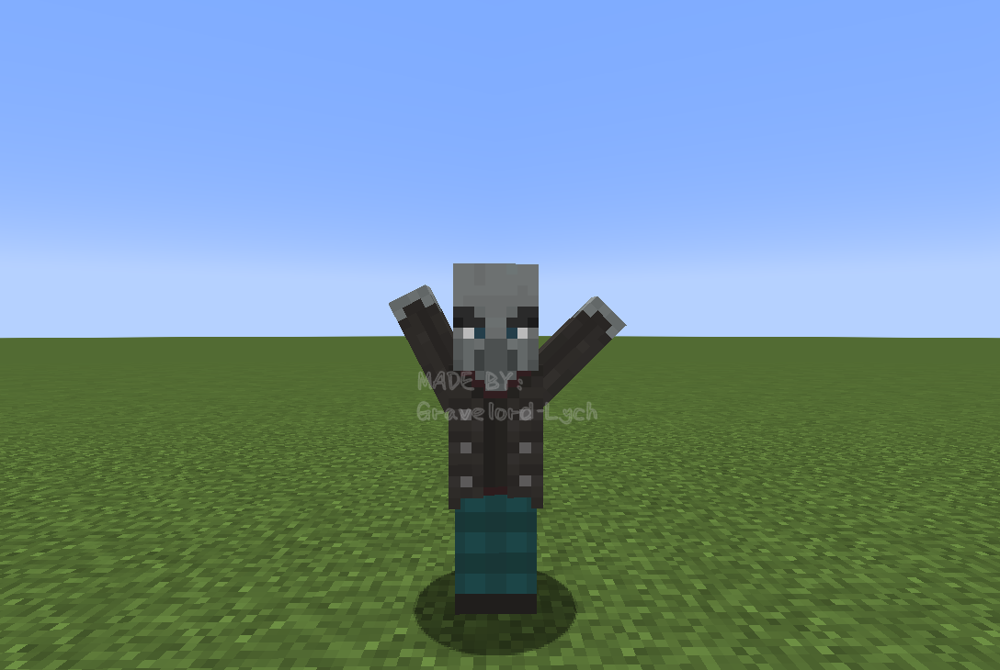
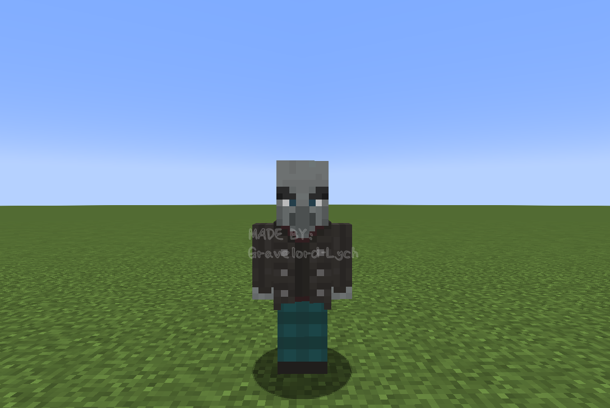

灾厄村民的手臂动作
在介绍唤魔者的渲染部分前，先提一下模型方面的一个重要内容。
IllagerArmPose类是AbstractIllager类的内部类，定义了灾厄村民所有可能的手臂动作。
public static enum IllagerArmPose {
CROSSED,
ATTACKING,
SPELLCASTING,
BOW_AND_ARROW,
CROSSBOW_HOLD,
CROSSBOW_CHARGE,
CELEBRATING,
NEUTRAL;
}
具体根据这些动作调整灾厄村民模型的地方在IllagerModel类中的setupAnim方法里，该类的其他部分相对容易理解，因此本节不再赘述。
所有手部动作如下面的图片所示。
CROSSED
CROSSED是双手交叉放在胸前的动作。

相关代码（这部分代码在整个setupAnim方法的最后面）：
boolean crossedArms = pose == IllagerArmPose.CROSSED;
arms.visible = crossedArms;
leftArm.visible = !crossedArms;
rightArm.visible = !crossedArms;
另外CROSSED是一个比较特殊的动作，在手臂动作为CROSSED状态下，原先的双臂是不渲染的，而是渲染代表“交叉在胸前的双臂”的名称为arms的另外一个ModelPart。当实体材质上的这个ModelPart的相应位置缺失材质时，交叉的手臂是不会渲染的。仔细观察实体材质可以发现掠夺者的材质与卫道士、唤魔者等灾厄村民的材质相比“少一块”，少的这部分就是arms对应的材质。因此将掠夺者的手臂动作设置为CROSSED时会出现不渲染手臂的现象，如下图所示。

ATTACKING
当手部动作被设置为ATTACKING时，会根据手上有无物品来调整成不同的动作。手上没有物品时则会双臂前伸，摆出类似僵尸攻击的姿势。
手上有武器时的动作： 
手上无武器时的动作： 
相关代码：
if (illager.getMainHandItem().isEmpty()) {
AnimationUtils.animateZombieArms(leftArm, rightArm, true, attackTime, ageInTicks); // 中间的布尔值参数传入true会使手臂抬高，就像僵尸在攻击状态下一样（可以参考1.2.1.1.2节）
} else {
AnimationUtils.swingWeaponDown(rightArm, leftArm, illager, attackTime, ageInTicks);
}
SPELLCASTING
SPELLCASTING是灾厄村民施法时使用的动作。

相关代码：
rightArm.z = 0.0F;
rightArm.x = -5.0F;
leftArm.z = 0.0F;
leftArm.x = 5.0F;
rightArm.xRot = Mth.cos(ageInTicks * 0.6662F) * 0.25F;
leftArm.xRot = Mth.cos(ageInTicks * 0.6662F) * 0.25F;
rightArm.zRot = 2.3561945F; // 这里增大zRot的绝对值来上抬手臂，注：2.3561945 = Math.PI * 0.75
leftArm.zRot = -2.3561945F;
rightArm.yRot = 0.0F;
leftArm.yRot = 0.0F;
BOW_AND_ARROW
BOW_AND_ARROW是灾厄村民使用弓箭进行攻击时的动作。

相关代码：
rightArm.yRot = -0.1F + head.yRot;
rightArm.xRot = (-(float) Math.PI / 2F) + head.xRot;
leftArm.xRot = -0.9424779F + head.xRot; // 注：0.9424779 = Math.PI * 0.3
leftArm.yRot = head.yRot - 0.4F;
leftArm.zRot = ((float) Math.PI / 2F);
CROSSBOW_HOLD
CROSSBOW_HOLD是灾厄村民手持弩但并未处于装填状态时的动作。

相关代码：
AnimationUtils.animateCrossbowHold(rightArm, leftArm, head, true); // true表示渲染右手持弩时的手部动作，false则为左手
CROSSBOW_CHARGE
CROSSBOW_CHARGE是灾厄村民装填弩时的动作。

相关代码：
AnimationUtils.animateCrossbowCharge(rightArm, leftArm, illager, true); // true表示渲染右手持弩时的手部动作，false则为左手
CELEBRATING
CELEBRATING是灾厄村民庆祝袭击（从灾厄村民的角度而言）胜利时的动作。与SPELLCASTING的差别在于这时候灾厄村民的手臂姿势不是轴对称的，手臂振幅更小，而且手臂伸得更高。

相关代码：
rightArm.z = 0.0F;
rightArm.x = -5.0F;
rightArm.xRot = Mth.cos(ageInTicks * 0.6662F) * 0.05F;
rightArm.zRot = 2.670354F; // 注：2.670354 = Math.PI * 0.85
rightArm.yRot = 0.0F;
leftArm.z = 0.0F;
leftArm.x = 5.0F;
leftArm.xRot = Mth.cos(ageInTicks * 0.6662F) * 0.05F;
leftArm.zRot = -2.3561945F; // 两个zRot的绝对值不相等，使手臂呈现非对称的姿势
leftArm.yRot = 0.0F;
NEUTRAL
NEUTRAL是灾厄村民手臂自然下垂时的动作。这是掠夺者手上物品非弩时的默认手臂动作，而卫道士、唤魔者、幻术师的默认手臂动作则为CROSSED。

相关代码：
rightArm.xRot = Mth.cos(limbSwing * 0.6662F + (float) Math.PI) * 2.0F * limbSwingAmount * 0.5F;
rightArm.yRot = 0.0F;
rightArm.zRot = 0.0F;
leftArm.xRot = Mth.cos(limbSwing * 0.6662F) * 2.0F * limbSwingAmount * 0.5F;
leftArm.yRot = 0.0F;
leftArm.zRot = 0.0F;
最后附上IllagerModel类中的整个setupAnim方法：
@Override
public void setupAnim(T illager, float limbSwing, float limbSwingAmount, float ageInTicks, float netHeadYaw, float headPitch) {
head.yRot = netHeadYaw * ((float) Math.PI / 180F);
head.xRot = headPitch * ((float) Math.PI / 180F);
if (riding) {
rightArm.xRot = (-(float) Math.PI / 5F);
rightArm.yRot = 0.0F;
rightArm.zRot = 0.0F;
leftArm.xRot = (-(float) Math.PI / 5F);
leftArm.yRot = 0.0F;
leftArm.zRot = 0.0F;
rightLeg.xRot = -1.4137167F; // 注：1.4137167 = Math.PI * 0.45
rightLeg.yRot = ((float) Math.PI / 10F);
rightLeg.zRot = 0.07853982F; // 注：0.07853982 = Math.PI * 0.025
leftLeg.xRot = -1.4137167F;
leftLeg.yRot = (-(float) Math.PI / 10F);
leftLeg.zRot = -0.07853982F;
} else {
// NEUTRAL
rightArm.xRot = Mth.cos(limbSwing * 0.6662F + (float) Math.PI) * 2.0F * limbSwingAmount * 0.5F;
rightArm.yRot = 0.0F;
rightArm.zRot = 0.0F;
leftArm.xRot = Mth.cos(limbSwing * 0.6662F) * 2.0F * limbSwingAmount * 0.5F;
leftArm.yRot = 0.0F;
leftArm.zRot = 0.0F;
// 下面则是腿部动作，所有手臂动作对应的腿部动作都一样
rightLeg.xRot = Mth.cos(limbSwing * 0.6662F) * 1.4F * limbSwingAmount * 0.5F;
rightLeg.yRot = 0.0F;
rightLeg.zRot = 0.0F;
leftLeg.xRot = Mth.cos(limbSwing * 0.6662F + (float) Math.PI) * 1.4F * limbSwingAmount * 0.5F;
leftLeg.yRot = 0.0F;
leftLeg.zRot = 0.0F;
}
IllagerArmPose pose = illager.getArmPose();
// ATTACKING
if (pose == IllagerArmPose.ATTACKING) {
if (illager.getMainHandItem().isEmpty()) {
AnimationUtils.animateZombieArms(leftArm, rightArm, true, attackTime, ageInTicks);
} else {
AnimationUtils.swingWeaponDown(rightArm, leftArm, illager, attackTime, ageInTicks);
}
}
// SPELLCASTING
else if (pose == IllagerArmPose.SPELLCASTING) {
rightArm.z = 0.0F;
rightArm.x = -5.0F;
leftArm.z = 0.0F;
leftArm.x = 5.0F;
rightArm.xRot = Mth.cos(ageInTicks * 0.6662F) * 0.25F;
leftArm.xRot = Mth.cos(ageInTicks * 0.6662F) * 0.25F;
rightArm.zRot = 2.3561945F;
leftArm.zRot = -2.3561945F;
rightArm.yRot = 0.0F;
leftArm.yRot = 0.0F;
}
// BOW_AND_ARROW
else if (pose == IllagerArmPose.BOW_AND_ARROW) {
rightArm.yRot = -0.1F + head.yRot;
rightArm.xRot = (-(float) Math.PI / 2F) + head.xRot;
leftArm.xRot = -0.9424779F + head.xRot;
leftArm.yRot = head.yRot - 0.4F;
leftArm.zRot = ((float) Math.PI / 2F);
}
// CROSSBOW_HOLD
else if (pose == IllagerArmPose.CROSSBOW_HOLD) {
AnimationUtils.animateCrossbowHold(rightArm, leftArm, head, true);
}
// CROSSBOW_CHARGE
else if (pose == IllagerArmPose.CROSSBOW_CHARGE) {
AnimationUtils.animateCrossbowCharge(rightArm, leftArm, illager, true);
}
// CELEBRATING
else if (pose == IllagerArmPose.CELEBRATING) {
rightArm.z = 0.0F;
rightArm.x = -5.0F;
rightArm.xRot = Mth.cos(ageInTicks * 0.6662F) * 0.05F;
rightArm.zRot = 2.670354F;
rightArm.yRot = 0.0F;
leftArm.z = 0.0F;
leftArm.x = 5.0F;
leftArm.xRot = Mth.cos(ageInTicks * 0.6662F) * 0.05F;
leftArm.zRot = -2.3561945F;
leftArm.yRot = 0.0F;
}
// CROSSED
boolean crossedArms = pose == IllagerArmPose.CROSSED;
arms.visible = crossedArms;
leftArm.visible = !crossedArms;
rightArm.visible = !crossedArms;
}
本节的内容到这里就结束了，接下来将会分析唤魔者的渲染。